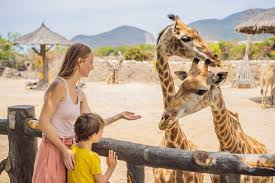
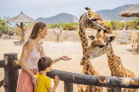

The Zoo is a delightful oasis designed specifically for young explorers.
Filled with friendly, approachable animals, the zoo offers a fun and educational experience for kids of all ages. From the fluffy bunnies in the petting zoo to the playful otters swimming in their habitat, the Zoo encourages hands-on learning and sparks curiosity about the natural world.
Interactive exhibits and engaging signage teach children about animal care, habitats, and conservation efforts. With safe, kid-sized walkways and plenty of shaded areas, the Zoo provides a safe, welcoming environment for families to discover the wonders of the animal kingdom.
 
